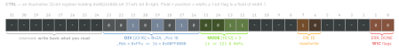
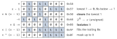
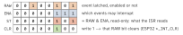

c · folio
In one line: A register is a fixed address reached through a volatile uint32_t *; a
field is a position + width — read it shift, then mask, write it
clear, then OR, in unsigned arithmetic with shift counts below the width.
r |= m is a load, an OR and a store: SET/CLR registers, bit-band aliases and
write-1-to-clear flags exist so that one bit changes in one store.
Download PDF Print view LaTeX source


Six idioms
| set n | r |= 1u << n | OR forces a 1 |
| clear n | r &= ~(1u << n) | AND with a hole |
| toggle n | r ̂= 1u << n | XOR flips |
| test n | (r >> n) & 1u | 0/1; !!(r & m) too |
| get field | (r & Msk) >> Pos | Msk = shifted mask |
| put field | r = (r & ~Msk) | ((v << Pos) & Msk) | clear, OR; the last
& Msk stops a too-big v |
Put DIV = 0x15 into 0x002A3080: r & ~0x00FF0000 = 0x00003080; (0x15 << 16) & Msk = 0x00150000; OR → 0x00153080.
| CMSIS (Arm) | ESP-IDF soc/ | Linux | |
|---|---|---|---|
| where | X_Pos | X_S | inside the mask |
| mask | X_Msk (shifted) | X_V plain, X_M shifted | GENMASK(h,l), BIT(n) |
| put | _VAL2FLD(X,v) | REG_SET_FIELD(r,X,v) | FIELD_PREP(m,v) |
| get | _FLD2VAL(X,r) | REG_GET_FIELD(r,X) | FIELD_GET(m,r) |
FIELD_PREP rejects a non-constant mask, or a constant value too wide for it, at compile time.
Precedence — where bit tests break
Shifts — C23 6.5.8
Operands promoted; result type = the promoted left one; a count <0 or ≥ its width is UB for every type. C23’s mandatory two’s complement (6.2.6.2) changed none of it.
32-bit | result |
|---|---|
1u << 31 | 0x80000000; unsigned << wraps mod 2N |
1 << 31 | UB: 231 is not an int value (GCC defines it as an extension;
-fsanitize=shift still reports it) |
-1 << 1 | UB: negative left operand |
-8 >> 1 | implementation-defined; GCC sign-extends → -4 |
x << 32, x >> 32 | UB for uint32_t x: (1u << w) - 1 fails at
w = 32; ~0u >> (32 - w) works for w 1..32 |
uint64_t m = 1 << 40; | UB: still an int shift — 1ULL << 40 |
(uint8_t)0x80 << 24 | promoted to int, 231 → UB; cast to
uint32_t first |
Constants, widths, printing
- Hex, octal, binary constants try
int,unsigned,long, …:0x80000000isunsigned int; decimal2147483648is a (long)long. - C23:
0b1011'0100(binary +'separator);printf("%#b")→0b10110100(glibc ≥ 2.35);%w32xprints auint32_t;UINT32_WIDTH= 32. uintN_tis optional (defined when such a type exists);uint_leastN_tis required.UINT8_C(1)has the promoted type,int.uint32_tmay beunsigned long: ESP-IDF ≥ 5.0 (GCC 11) on Xtensa and RISC-V —"%u"warns, print withPRIx32.- Promotion:
uint8_t x = 0xFF;~xis theint-256, never 0 — write(uint8_t)~x. C23unsigned _BitInt(N)is not promoted:~stays N bits (GCC 14+: x86, AArch64).
The lowest set bit

- Loop
x &= x - 1to 0 = popcount in O(set bits) (Wegner 1960; K&R ex. 2-9). One bit set:x && !(x & (x - 1))— forgetx &&and 0 passes. - a = 2k, unsigned
h:h & (a - 1)=h % a; align up:(x + a - 1) & ~(a - 1). - Sign-extend a w-bit field (w ≤31):
m = 1u << (w - 1),(int32_t)(x ̂ m) - (int32_t)m— no implementation-defined step. - Rotate, defined for
n0..31:(x << n) | (x >> (-n & 31))(x >> (32 - n): UB at 0). GCC 15:__builtin_stdc_rotate_left.
<stdbit.h> (C23 7.18) vs the builtins
| need | C23 | GCC / Clang | at 0 |
|---|---|---|---|
| count 1s | stdc_count_ones | __builtin_popcount | 0 |
| trailing 0s | stdc_trailing_zeros | __builtin_ctz | 32 · UB |
| leading 0s | stdc_leading_zeros | __builtin_clz | 32 · UB |
| ffs: index+1 | stdc_first_trailing_one | __builtin_ffs | 0 · 0 |
| one bit set? | stdc_has_single_bit | x && !(x&(x-1)) | false |
| bits needed | stdc_bit_width | 32 - clz | 0 · UB |
| power of 2 | stdc_bit_floor / _ceil | 0 / 1 |
Suffixes _uc…_ull + type-generic (unsigned only); bit_ceil → 0 if 2k does not fit. Shipped by the C library (glibc 2.39, Jan 2024); GCC 14: __builtin_stdc_*, __builtin_clzg(x, 32) (2nd arg = result for 0). Byte order: __STDC_ENDIAN_NATIVE__.
Register access
#define REG32(a) (*(volatile uint32_t *)(a))
#define CTRL REG32(PERIPH_BASE + 0x10u) // illustrative
#define DIV_Pos 16u
#define DIV_Msk (0xFFu << DIV_Pos)
uint32_t div = (CTRL & DIV_Msk) >> DIV_Pos; // 1 load
CTRL = (CTRL & ~DIV_Msk) | ((v << DIV_Pos) & DIV_Msk);
STATUS = DONE; // W1C: write only that 1volatile: each access in the source happens; what counts as one is implementation-defined (6.7.4.1). Read-only register: const volatile. No atomicity.
One bit, one store
- ESP32
GPIO_OUT_W1TS/_W1TC(offset0x08/0x0C) set / clear the 1-bits. ESP-IDF’sREG_SET_BIT,REG_SET_FIELDare plain C read-modify-writes. - STM32
GPIOx_BSRR: bits 0–15 set, 16–31 resetODR— “no risk of an IRQ occurring between the read and the modify access”; both: set wins. - Bit-band (Cortex-M3/M4 option; not M0/M0+, ARMv8-M): alias = base + byte_offset×32 + bit×4; 1 MB of SRAM
0x2000_0000→0x2200_0000, of peripherals0x4000_0000→0x4200_0000;0x2200001C= bit 7 of0x20000000. Bit 0 of the written word is the bit.
Status flags — how a bit is cleared

kind | clears by | write |
|---|---|---|
rc_w1 | writing 1 (W1C): EXTI_PR, ESP32 STATUS_W1TC | REG = F; REG |= F
writes back every pending 1 and clears flags never handled |
rc_w0 | writing 0: STM32 TIMx_SR | SR = ~F; SR &= ~F
zeroes flags raised between its load and store |
rc_r | being read | any read is a side effect |
C bit-fields vs hardware
Unit, order in it, straddling and a plain int field’s sign are implementation-defined (GCC: the ABI decides; int fields signed); no & of a field; :0 closes the unit. GCC: volatile bit-fields “may be implicitly read when written to, or when adjacent bit-fields are accessed” — “unwise” for hardware; -fstrict-volatile-bitfields (default: the ABI’s) forces one access of the declared width. ESP-IDF’s soc/*_struct.h uses them anyway.